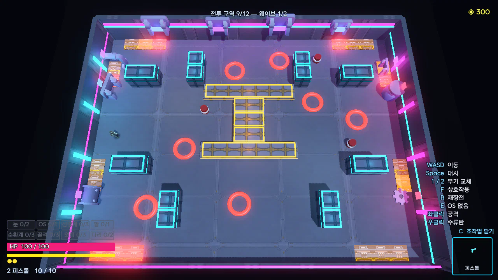
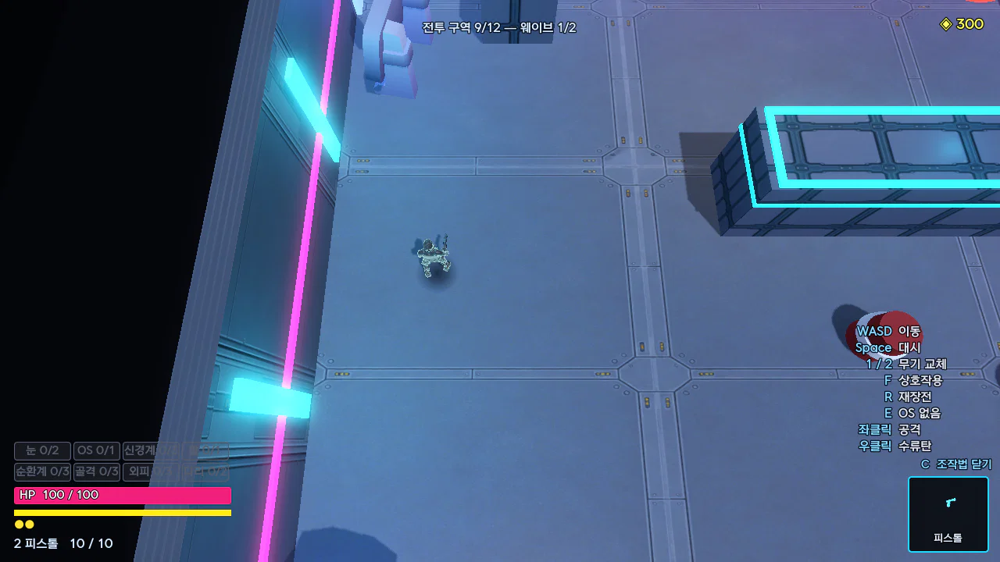

레벨 기획서
EDGE
RUNNERS
사이버펑크 2077을 탑다운 로그라이트로 재구성한 게임.
빌드를 시험하는 방을 어떻게 그리고 배치했는지 다룬다.
[지원자 이름]
1인 개발, Godot 4.7.2, 2026.08.21 – 10.21
1개요 기획서에서 갈라져 나온 레벨 세부 기획서입니다. 방을 그리는 격자 도면과 맵 편집기, 맵 카탈로그, 첫 판의 학습 순서와 웨이브, 방 종류, 보스를 다룹니다. 숲길 튜토리얼은 따로 정리합니다. 오른쪽 그림은 손그림에서 옮긴 고리 전투방을 위에서 찍은 렌더입니다.
01 레벨 제작 과정
손그림에서 격자 도면을 거쳐 실제 플레이까지

손그림
엄폐물과 전기 발판, 보상 위치를 색으로 칠했다.
그림 아래에 노리는 플레이를 적었다.

격자 도면
맵 편집기에서 한 칸 2m 격자로 옮겼다.
20×15칸이 그대로 40×30m 방이 된다.

실제 플레이
편집기에서 Enter를 누르면 그 자리에서 방을 다시 지어 바로 싸워 본다.
EDGERUNNERS 레벨 기획서
02
2손그림의 첫 번째 방은 바람개비, 두 번째 방은 고리 전투방이 됐습니다. 그림 아래에는 “플레이어가 지속적으로 빙글빙글 돌며 적을 처치하도록 설계”, “바깥으로 붙어서 도는 플레이는 방지하기 위함”처럼 노린 플레이를 적어 두었습니다. 좌표를 코드에 적어 두면 고칠 때마다 빌드를 다시 돌려야 하고 배치를 눈으로 볼 수 없어서, 방은 격자 도면으로 그리게 했습니다. 도면으로 그리면 방 전체가 한 화면에 들어옵니다. 도면은 텍스트나 이미지 파일로도 쓸 수 있고, 게임 안 맵 편집기로도 찍습니다.
02 격자 규칙
도면만 보고도 대시로 넘을 곳을 셀 수 있다
한 칸 2m
대시 3.5m
혼자 선 엄폐물 한 칸은 대시로 넘고, 붙은 두 칸에서는 막힌다.
대시 거리는 이동속도와 상관없이 3.5m로 고정했다.
문 통로
문 앞 차선에 놓은 엄폐물은 아무 표시 없이 빠진다.
통로는 최소 두 칸(4m)으로 낸다.
보상 자리 칸
전투가 끝나면 좌대가 설 칸을 도면에 직접 찍는다.
안 찍으면 방 한가운데에 선다.
방 크기
격자 크기가 그대로 방 크기가 된다.
바람개비와 고리는 손그림 비율 4:3에 맞춰 40×30m로 그렸다.
EDGERUNNERS 레벨 기획서
03
3대시 3.5m는 엄폐물 한 칸(0.8 + 2 + 0.5 = 3.3m)을 넘는 거리를 기준으로 정했습니다. 거리가 이동속도를 따라 늘면 사이버웨어 하나 때문에 도면이 맞지 않게 되므로, 속도만 이동속도 × 2.1로 둡니다. 통로를 두 칸으로 내는 이유는 내비게이션 반지름이 0.75m라서 2m 한 칸 통로가 실제로는 0.5m가 되기 때문입니다. 문 앞 엄폐물이 빠지는 것은 통로가 막히면 방을 나갈 수 없어서입니다. 벽은 높은 엄폐물과 같은 층이라 대시로 넘을 수 있지만 높이가 4m라 시야와 총알을 끊습니다. 그래서 벽은 길을 막기보다 보이지 않는 구간을 만드는 데 씁니다. 전기 함정은 늘 켜져 있고, 대시로는 두 칸까지 피해 없이 넘지만 걸어서 밟으면 0.3초마다 7.8씩 들어옵니다. 폭발물은 방마다 3개이고, 찍지 않으면 동선을 막지 않는 자리에 무작위로 놓습니다. 방 크기는 도면마다 다르고, 코드 기본방은 32×26m, 엘리트 손맵은 60×30m와 38×38m입니다.
03 맵 편집기
도면을 그린 자리에서 바로 방을 지어 싸워 본다
1
그린다
붓 14개로 칸을 칠한다.
격자는 12×10칸에서 30×22칸까지다.
2
태그를 켠다
전투, 엘리트, ???, 훈련장, 보스 중에서 1~5 키로 켠다.
태그로 어느 방에 뽑힐지가 정해진다.
3
싸워 본다
Enter를 누르면 그 자리에서 방을 다시 지어 바로 싸운다.
4
저장한다
저장할 때마다 고친 내용이 맵별 이력 파일에 쌓인다.
붓 14개
빈 바닥
높은 엄폐물
낮은 엄폐물
벽
적 5종
폭발물
시작
보스
전기 함정
보상 자리
이력 파일 (바람개비)
v3 09-09 22:45 방을 키웠다
높은엄폐 +5 (15→20) · 낮은엄폐 +2 (6→8) · 크기 32x26→40x30
v2 09-09 20:30 손그림대로 다시 그렸다
높은엄폐 -8 (23→15) · 낮은엄폐 0 (6→6) · 보상자리 +2 (0→2)
EDGERUNNERS 레벨 기획서
04
4편집기는 게임 안에서 M이나 F2로 엽니다. 도면은 텍스트나 이미지 파일로도 쓸 수 있습니다. 직접 그린 방을 받는 규칙은 10-07에 정하고 10-16에 다듬었습니다. 편집기에서는 엄폐물, 벽, 전기, 보상 자리 같은 구조만 그리고 방 종류 태그를 켭니다. 조명, 소품, 외벽 같은 분위기는 그 방의 씬이 입히므로 도면에 그릴 필요가 없습니다. 전기 발판은 찍어 두어도 첫 판 8구역 전에는 빠지고, 보스를 한 번 깨면 1방부터 나옵니다. 저장한 슬롯 파일은 커밋합니다. 오른쪽 두 줄은 바람개비 방의 실제 이력 파일에서 옮겼습니다. 저장할 때마다 엄폐물과 보상 자리가 몇 개에서 몇 개로 바뀌었는지가 남습니다.
04 맵 카탈로그
손으로 그린 맵 8개가 방 종류별 후보로 들어간다
전투방
바람개비
네 팔이 교차점을 중심으로 90도씩 돈다.
어느 문으로 들어와도 팔 하나가 시야를 끊어서, 돌면서 싸울지를 판단하게 된다.
전투방
고리
가운데 낮은 I자는 총알은 넘어오지만 걸어서는 못 넘는다.
벽을 따라 두른 전기가 바깥으로 도는 길을 막아서, 가운데를 끼고 돌며 적을 따돌릴지 고르게 된다.
전투방 1개 더
54×22m, 가로로 긴 방.
[이 방에서 판단할 것 한 줄]
엘리트방 2개
60×30m, 네 귀퉁이를 벽으로 감싼 전기 포켓.
38×38m, 테두리 전체에 두른 전기 띠.
??? 방 2개
어두운 방이라 작업등과 전기 발판 불빛에 기대 싸운다.
보스방 1개
엄폐 칸 12개.
두 중심선은 등장 연출 때문에 비운다.
코드 기본방 2개
고정 엄폐물 7개를 둔 기준 방.
전투방과 엘리트방 후보로 남겼다.
EDGERUNNERS 레벨 기획서
05
5손으로 그린 맵은 전투 3, 엘리트 2, ??? 2, 보스 1로 모두 8개입니다. 방에 들어갈 때 그 방 종류의 후보 중 하나를 뽑는데, 태그로 고르고 태그가 없으면 이름 앞머리로 고릅니다. 바람개비 교차점의 전기 함정 두 칸은 질러가려면 치러야 하는 값입니다. 고리는 둘레의 전기가 벽에 붙어 도는 길을 막아서 가운데만 몸을 가릴 곳으로 남습니다. 전투방과 엘리트방은 코드 기본방도 후보로 남겼습니다. 도면을 넣으면서 기존 방을 지우면 후보 수가 늘지 않기 때문입니다. ??? 방은 기본방을 쓰지 않습니다. 가로로 긴 전투방과 엘리트방 두 개는 직접 설계한 방입니다.
05 v1의 실패
보상 좌대 자리가 도면의 중심을 지우고 있었다
손그림에서는 두 방 모두 가운데 구조물이 중심이고, 보상 위치(초록)는 그 아래에 있다.
v1
좌대가 늘 방 한가운데 서서, 그 자리를 비우느라 도면의 중심(바람개비 십자, I자)을 들어냈다.
v2
보상 자리 칸(F)을 만들어 좌대를 아래로 내리고, 가운데를 그림대로 채웠다.
v3
32×26m에서는 문 앞 통로 넷과 좌대가 방의 절반을 차지해 팔이 뭉툭했다.
40×30m로 키우고, 늘어난 자리는 팔 길이와 뒤로 도는 길에 썼다.
도면을 렌더로 찍어 손그림 옆에 놓고 나서야 알았다.
설계는 그대로 두고 도구 쪽을 고쳤다.
EDGERUNNERS 레벨 기획서
06
6바람개비 v1의 이력에는 “방 한가운데(가로 3줄)는 비웠다. 전투가 끝나면 보상 좌대가 서는 자리다.”라고 적혀 있습니다. 고리 v1도 같은 이유로 가운데 I자를 위아래로 쪼개 놓았습니다. 좌대 자리라는 도구의 제약 때문에 도면의 중심이 빠졌고, 도면 렌더를 손그림과 나란히 놓고 비교하고 나서야 그림과 방이 다르다는 것을 알았습니다. 그래서 격자에 보상 자리 칸을 넣었습니다. 이 결정으로 좌대는 늘 가운데라는 단순함을 버렸고, 이제 방마다 좌대 자리를 찍어야 합니다(안 찍으면 여전히 가운데에 섭니다). v3에서 늘어난 자리는 바람개비의 팔 길이(위 세 칸, 좌우 네 칸, 아래 두 칸)와, 귀퉁이 조각을 벽에서 두 칸 떼어 낸 뒤로 도는 길에 썼습니다. 지금은 통로 폭과 문 차선을 검사가 봅니다.
06 첫 판의 학습 순서
방 번호를 따라 새 장치가 하나씩 나온다

1 엄폐물
총알을 막는 자리와 시야가 끊기는 자리가 있다.

2 폭발물
지형을 무기로 쓴다.

5 엘리트
예고를 보고 피한다.

8 전기 함정
머무를 수 없는 칸이 지형을 가른다.
처음 만나는 장치는 실물을 3D로 띄운 설명창이 한 번 뜬다.
이 순서는 첫 판에만 지키고, 보스를 한 번 깨면 처음부터 다 나온다.
EDGERUNNERS 레벨 기획서
07
73번 방부터 잡졸의 30%가 무기에 빛이 도는 속성 적으로 나오고, 방의 40%에는 메딕이 섭니다. 상태 이상을 거는 적과 고치는 적을 먼저 끊는 법을 여기서 배웁니다. 4번 방부터는 드론 방이 50%로 나오는데, 엄폐물 위로 나는 적이라 엄폐물이 통하지 않습니다. 6번 방부터 ??? 방 문이 45% 확률로 뜨고, 어둡고 어려운 대신 프로토타입을 줍니다. 설명창은 글만으로는 화면의 어느 덩어리가 그 장치인지 알기 어려워서 실제 물건을 3D로 띄워 보여 줍니다. 엄폐물, 벽, 폭발물, 엘리트, 전기 함정, 메딕, 드론, 속성, 상태 이상, 레벨, 명상에 창이 있습니다. 엄폐물 창은 10-20부터 엄폐물이 실제로 선 방에서만 뜹니다. 설정값 대신 방에 놓인 실물을 세어서 정합니다.
07 웨이브
모든 방을 최소 두 웨이브로 늘렸다

한 웨이브가 사방에서 조여 온다.
적마다 예고가 따로 차오른다.
예전
3방 아래는 한 웨이브라서, 처음 두 방은 “들어가서 몇 대 치면 끝”이었다.
자리를 다시 잡을 일이 없으니 엄폐물도 대시도 배울 기회가 없었다.
EDGERUNNERS 레벨 기획서
08
8웨이브당 적은 7, 8, 9명입니다. 방이 넓으면 최대 1.8배까지 늘고, 메딕이 서면 2명이 더 나옵니다. 엘리트방과 ??? 방은 세 웨이브입니다. 예전에는 3번째 방 아래가 한 웨이브라서 처음 두 방이 들어가서 몇 대 치면 끝났고, 자리를 다시 잡을 일이 없으니 엄폐물도 대시도 배울 기회가 없었습니다. 그래서 1번 방부터 최소 두 웨이브로 늘렸고, 다음 웨이브가 들어오면 자리를 다시 잡게 됩니다. 웨이브당 적 수는 10-07에 4~8명이었고, 10-09에 14~18마리까지 늘렸다가 “너무 많다, 절반”이라는 판단으로 10-10에 7~9마리로 줄였습니다.
08 방 종류
방마다 주는 것과 받는 값을 다르게 나눴다
싸우는 방
보상 좌대 2칸 중 하나를 고른다.
사이버웨어나 레벨업이 대부분이다.
적이 전원 정예라 어렵다.
좌대 3칸 중 2개를 가져간다.
아주 어렵고 어둡다.
프로토타입 3칸 중 1개를 주고, 부작용이 붙는다.
문에 적힌 무기로 고정해 싸운다.
그 무기의 카드 둘과 속성 변환 중 1개를 고른다.
싸우지 않는 방
몸을 고친다.
치료, 레벨업, 부작용 제거, 새 사이버웨어.
보스 바로 앞에 있다.
체력을 60% 회복하고, 노점 1칸이 선다.
문에 방 종류와 부위가 적혀 있어서, 빈 부위를 채울 문을 골라 길을 정한다.
EDGERUNNERS 레벨 기획서
09
9방을 나눈 기준은 무엇을 주고 그 대가로 무엇을 받는가입니다. 두 방이 같은 것을 같은 값에 준다면 둘 중 하나는 있을 이유가 없다고 봤습니다. 전투방 좌대는 사이버웨어와 레벨업이 대부분이고, 스탯 30%와 구급상자 12%로 한 칸이 바뀝니다. 리퍼닥 가격은 레벨업 Lv2 300, Lv3 500, 부작용 제거 600, 새 사이버웨어 350입니다. 상점과 리퍼닥은 둘 다 코인을 쓰지만 상점은 수치를 팔고 리퍼닥은 몸을 고칩니다. 칸은 둘 다 팔지 않고 시설 작업대의 영구 강화로만 엽니다. 갈림길에는 문이 2~3개 있고, 그중 한 칸이 특수방이 될 확률은 78%입니다. 상점은 3, 6, 9방 중 한 번, 연구실은 60%로 나옵니다. ??? 방은 6구역부터 45% 확률로 뜹니다. 못 만나는 판도 있어야 만났을 때 기억에 남기 때문입니다. 리퍼닥은 등장만 보장해서, 문에 한 번도 안 떴으면 12구역에서 한 칸을 리퍼닥에 내줍니다. 문이 화면 밖에 있어도 가장자리 화살표가 방향과 보상을 알려 줍니다.
09 보스
체간을 무너뜨려야 크게 들어가는 기업 히트맨

2페이즈의 보스가 붉은 잔상을 끌며 파고들어 칼을 들었다.
주황은 맞는 범위, 빨강은 맞는 순간이다.
체간 900
처형 피해는 최대 체력의 5.5% × 내 피해 배율이다.
2페이즈
이동은 1.12배, 피해는 1.3배로 늘고 예고는 0.7배로 짧아진다.
산데비스탄 돌진, 어둠 기습, 전기 장판이 더해진다.
잡기
1페이즈는 리볼버 3발과 돌려차기, 2페이즈는 8연타와 공중 발차기로 이어진다.
EDGERUNNERS 레벨 기획서
10
10보스는 판의 끝에 서는 하나뿐인 적입니다. 공격 예고는 일반 적과 같은 방식으로 읽힙니다. 받는 피해가 평소 70% 줄어서, 체간을 무너뜨려야 크게 들어갑니다. 패턴은 거리표(4.5m, 11m)를 바탕으로 고르고, 붙어 있으면 밀쳐 쏘기, 3m 안이면 돌아 베기, 9m 밖이면 굴러 들기로 플레이어를 읽습니다. 잡기는 대기시간 11초의 특수기이고, 칼과 리볼버, 수류탄을 섞는 연계가 22%로 끼어듭니다. 2페이즈 전환은 2.2초 무적 연출로, 무릎을 꿇었다가 산데비스탄을 켜고 일어선 뒤 암전과 몸 발광이 이어집니다. 산데비스탄 돌진은 6m 밖에서 나오고, 어둠 기습에는 미끼 분신 둘이 따라옵니다. 체력은 1200에서 3000을 거쳐 2000으로 정했습니다.
10 보스 개선안
10-14 개선안에서 넣은 것과 덜어 낸 것

체력 50%에서 2페이즈로 넘어가는 순간이다.
2.2초 무적 전환 연출 뒤 방이 어두워지고 몸이 빛난다.
들어간 것
든 채 멈추는 예고, 패턴마다 다른 몸짓
무릎 꿇는 붕괴, 50% 전환 연출
플레이어 읽기, 산데비스탄 거리 11m → 6m
체간 상시 감소, 1초 피해 상한, 전기 장판
모양을 바꾼 것
분신 협공은 맴돌다 멈추지 않는 돌진(어둠 기습)으로
총 반동, 저격총, 움찔, 옆걸음은 피격 그림 갈래로
제안에 없던 것
보스 잡기, 96발 난사, 2페이즈 발차기
체간이 무너지면 F로 처형, 쓰러진 보스 무적
EDGERUNNERS 레벨 기획서
11
1110-14에 “보스전이 모션도 그렇고 패턴도 너무 허접해... 개선안이 필요해”라는 판단에서 출발해, 코드를 고치기 전에 원인부터 제안서로 적었습니다. 예고가 끝나기 전에 휘두르기가 끝나 버렸고, 산데비스탄 패턴은 실측 0%였고, 체간이 빠지지 않았습니다. 그래서 칼을 든 채 멈추는 것이 예고이고 휘두르고 거두는 동안이 판정이라는 몸짓 규칙을 잡졸과 같게 맞췄습니다. 산데비스탄은 11m 넘게 떨어진 때가 사실상 없어서 6m로 당겼습니다. 분신 협공 안은 2페이즈의 어둠 기습이 됐고, 다섯 번 고친 끝에 맴돌다 멈추지 않고 돌진하는 패턴이 됐습니다. 총 반동, 저격총, 움찔, 옆걸음은 넣지 않고, 대신 피격 그림을 베기, 돌격, 발차기 갈래별로 나눴습니다(10-17). 체간이 무너진 보스를 F로 처형하는 것은 제안에 없던 것으로 10-17에 넣었습니다.
11 되돌린 결정
적이 엄폐물에 숨는 AI는 세 번 고친 뒤 지웠다
4 / 14
실제 맵 일곱 방에서 원거리병 14명 가운데 숨을 자리를 찾은 수.
왜
나머지는 벽 앞에서 버벅댔다.
반쯤만 도는 기능이라면 빼는 편이 낫다고 봤다.
남은 것
엄폐물은 플레이어가 어디에 설지 판단하는 장치로만 남는다.
EDGERUNNERS 레벨 기획서
12
12원거리병이 엄폐물 뒤에 숨는 AI를 세 번 고쳤지만, 실제 맵 일곱 방에서 재 보니 14명 중 4명만 숨을 자리를 찾았습니다. 그때 “엄폐 메커니즘 너무 구현이 어렵다. 그냥 삭제해”라고 정리하고 10-16에 통째로 롤백했습니다. 숫자는 개발용 측정 모드(--dev-probe)로 실제 게임의 방을 돌려 잰 값입니다. 이 결정으로 적이 엄폐물을 쓰는 전투는 버렸고, 엄폐물은 플레이어가 판단할 거리로만 남았습니다. 같은 기준으로 바닥 함정도 전기 함정과 판단이 겹쳐서 게임에서 뺐습니다.